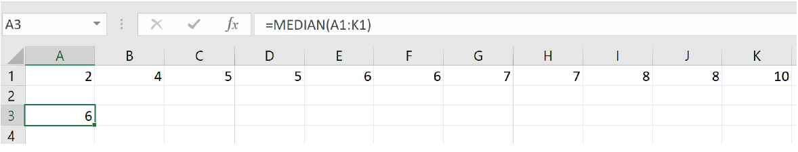

Objectives:Section 4.3 Summary Statistics: Measures of Center
Students will be able to:
Calculate and describe the measures of center: mean and median
Analyze the relationship of the mean and median to the shape of the data
Subsection4.3.1Calculating Summary Statistics
In addition to graphical and verbal descriptions, we can use numbers to summarize quantitative distributions. We want to know what an “average” value is (where the data is centered), and how spread out the values are. Together, the center and spread provide important information which can be used to estimate our population parameters. In this section we will discuss the measures of center and in the next section we will discuss the measures of spread.
Subsection4.3.2Measures of Center
There are a few different types of “averages” that measure the center, and the one we use will depend on the shape of the distribution. We will mention the mode but focus mainly on the two most common “averages”: the mean and the median.
Subsection4.3.3Mode
In the previous section, we saw that the modes are related to the peaks where similar values are grouped. The mode is the value with the highest frequency (A mode is the value where a peak occurs. One additional way to calculate the mode(s) is to take the midpoint of each peak in the histogram.)
Subsection4.3.4Mean
The mean, or more formally the arithmetic mean, is what probably comes to mind when you hear the word average. The calculation of the mean uses every data value in the distribution and is therefore strongly affected by skew and outliers.
To calculate the mean of a distribution, we divide the sum of the data values by the number of data values we have. The sample mean is usually represented by, a lower-case with a bar over it, read-bar. The lower-case letter n is used to represent the number of data values or sample size.
Mean.
\begin{equation*}
\bar{x}=\frac{\text{sum of data values}}{n}
\end{equation*}
Example4.3.1.
Mirabel’s exam scores for her last math class were: 79, 86, 82, 94. What is her mean test score?
To find the mean test score we need to find the sum of her test scores, then divide the sum by the number of test scores (\(n=4\)). The mean is:
\(\bar{x}=\frac{79+86+82+94}{4}=85.25\) points
We will round the sample mean to one more decimal place than the original data. In this case, we would round 85.25 to 85.3 points. Also notice that the mean has the same units as the data and it is important to label it.
It is reasonable to calculate the mean by hand when the data set is small, but if the data set is large, or if you will be finding additional statistics, then technology is the way to go. We can find the mean of a data set using the spreadsheet formula =AVERAGE.
Example4.3.2.
The price of peanut butter at 5 stores was $3.29, $3.59, $3.79, $3.75, and $3.99. Find the mean price using a spreadsheet. There are two ways to use the =AVERAGE formula. If your data set is not too large, you can enter each value directly into the formula. Using this method, we write
=AVERAGE(3.29 3.59, 3.79, 3.75, 3.99)
and we get an answer of $3.68.
The other method is to enter the data values into a single column (or row) of the spreadsheet and reference the column (or row) range in the formula. We can enter the range by highlighting the data values. As illustrated below, if we enter the data into column A, the formula is
=AVERAGE(A1:A5)
and we also get an answer of $3.68.
Sometimes when there is a lot of data with repeated values we are given a frequency table.
Example4.3.3.
One hundred families from a particular neighborhood are randomly selected and asked to give their annual household income rounded to the nearest $5,000. The results are shown in the frequency table below.
Income (thousands of dollars)
Frequency
$15
6
$20
8
$25
11
$30
17
$35
19
$40
20
$45
12
$50
7
Calculating the mean by hand could get tedious if we try to type in all 100 values:
We could calculate this more easily by noticing that adding 15 to itself six times is the same as \((15)(6)=90\text{.}\) Using this simplification, we get
The mean household income of our sample is 33.9 thousand dollars or $33,900.
We could also use =AVERAGE to find the mean for this example, but it would require entering each repeated value individually. If the mean is all we need, then taking advantage of multiplication as repeated addition is the more straightforward way to go. We could also enter the frequency table and the calculation above in a spreadsheet.
Example4.3.4.
Extending the last example, suppose a new family moves into the neighborhood and has a household income of $5 million ($5000 thousand). Adding this to our sample, our mean becomes:
While 83.1 thousand dollars, or $83,100 is the correct mean household income for the new sample, it is no longer representative of the neighborhood – in fact, it is greater than every income in the sample aside from the new one we added!
Imagine the data values on a see-saw or balance scale. The mean is the value at the tip of the triangle that keeps the data in balance, like in the picture below.
If we graph our household data, the $5 million value is so far out to the right that the mean has to adjust to keep things in balance.
For this reason, when working with data that is skewed or has outliers, it is common to use a different measure of center, the median.
Subsection4.3.5Median
The median of a data set is the “middle” value, when the data are listed in order from smallest to largest. We can also think of the median as the value that has 50% of the data below it and 50% of data above it. As we will discover later, the median is also the 50th percentile.
Median.
If the number of data values is odd, then the median is the middle data value If the number of data values is even, then the median is the mean of the middle pair
Example4.3.5.
When finding the median of an odd number of values.
Use the following quiz scores: 5, 10, 8, 6, 4, 8, 2, 5, 7, 7, 6
We must start by listing the data in order: 2, 4, 5, 5, 6, 6, 7, 7, 8, 8, 10.
It is helpful to mark or cross off the numbers as you list them to make sure you don’t miss any. Also, be sure to count the number of data values in your ordered list to make sure it matches the number of data values in the original list.
In this example there are 11 quiz scores. When the distribution contains an odd number of data values there will be a single number in the middle and that is the median. For small data sets, we can “walk” one value at a time from the ends of the ordered list towards the center to find the median
When finding the median of an even number of values.
Use the following quiz scores: 2, 4, 5, 5, 6, 6, 7, 7, 8, 8, 10, 20.
There are now 12 quiz scores in our sample. When the distribution contains an even number of data values there will be a pair of values in the middle rather than a single value. Then we take the average of the middle two values.
What is important to notice is that despite adding an outlier to our data set, the median is largely unaffected. The median quiz score for the new distribution is 6.5 points.
We can also find the median using the spreadsheet formula =MEDIAN. Just like the spreadsheet function =AVERAGE, we can either list the individual data values in the formula, or we can enter the data values into a row (or column) and use the row range (or column range) in the formula.
Using the data values of the original distribution, we can write function as
=MEDIAN(2, 4, 5, 6, 6, 7, 7, 8, 8, 10)
or
=MEDIAN(A1:AK)

and we get 6 points for the median test score.
Example4.3.7.
Let’s continue with our peanut butter example and find the median both by hand and with a spreadsheet. The price of peanut butter at 5 stores was $3.29, $3.59, $3.79, $3.75, and $3.99.
To find the median by hand, we must first list the prices in order. This give us: $3.29, $3.59, $3.75, $3.79, $3.99
Since there are an odd number of data values in the sample (\(n=5\)), we know that the median will be the single data value in the middle of the ordered list.
The median price of peanut butter at these five stores is $3.75.
Using a spreadsheet, we write
=MEDIAN(3.29, 3.59, 3.79, 3.75, 3.99)
and we get a median price of $3.75.
It is worth noting that when you use a spreadsheet to find the median you do not have to order the data first. You can enter the data values in the order they are given to you.
Subsection4.3.6The Relationship Between the Mean and the Median
If a distribution is skewed, the mean is pulled in the direction of the skew, as we saw in the see-saw diagram. In a right skewed distribution, the mean is greater than the median, while in a left skewed distribution, the mean is less than the median. If the distribution is symmetric, the mean and the median will be approximately equal.
To demonstrate this, we have entered some data in GeoGebra, as previously explained, and made histograms. To see the statistics that GeoGebra calculates, we click on the summation symbol \((\sum x)\) on the right-hand menu bar.
Example4.3.8.
Fifty people from the Portland Metro area who are employed full time were sampled and their annual salaries were recorded (to the nearest thousand dollars). The histogram and summary statistics from GeoGebra are shown below.
From the histogram we can see that the shape of the distribution is unimodal and skewed to the right. We can see from the statistics output on the left that the mean is greater than the median. This is because the few people with higher incomes bring the average up.
Figure4.3.9.Mean \(=\$67,160\text{,}\) Median \(=\$53,500\text{,}\) Mean \(\gt\) Median
Example4.3.10.
A random selection of 30 math 105 exams at PCC were sampled and their scores were recorded. The histogram of the resulting distribution is shown below.
The shape of the distribution is unimodal and skewed to the left. There also appears to be an outlier between 20 and 30. We can see from the statistics output that the mean is less than the median. This is because the low test score brought the average down. points points
Figure4.3.11.Mean \(=81.7\) points, Median \(=87.5\) points, Mean \(\lt\) Median
Example4.3.12.
Nineteen people identifying as female were sampled and their heights (in inches) were recorded. The histogram of the resulting distribution is shown below.
The shape of the distribution is unimodal and roughly symmetric. We can also see from the statistics output that the mean and the median are approximately equal. inches inches
Figure4.3.13.Mean \(=62.6\) inches, Median \(=62\) inches Mean \(\approx\) Median
We can use these observations in reverse as well. If we know the mean is greater than the median, then we can expect the distribution to be skewed to the right. If the mean is less than the median, then we can expect the distribution to be skewed to the left. When the mean and the median are approximately equal, the distribution is likely to be symmetric.
Example4.3.14.
Recent college graduates were asked how much student loan debt they have. The data has a mean of $46,265 and a median of $33,652. Just based on this information, do you expect the distribution to be symmetric, skewed to the left, or skewed to the right?
Since the mean is greater than the median, we can expect the distribution to be skewed to the right.
Exercises4.3.7Exercises
1.
A group of diners were asked how much they would pay for a meal. Their responses were: $7.50, $25.00, $10.00, $10.00, $7.50, $8.25, $9.00, $5.00, $15.00, $8.00, $7.25, $7.50, $8.00, $7.00. $12.00.
Find the mean, including units.
Find the median, including units.
Based on the mean and the median, would you expect the distribution to be symmetric, skewed left, or skewed right? Explain.
2.
The amount of commercials in an hour of television varies by channel. The total length (in minutes) of all commercials from 8 pm to 9 pm in for some selected broadcast and cable channels on a weekday evening were: 10, 12.75, 7, 9, 9.75, 6.5, 12.5, 12.5, 8.75, 17, 10.5, 2.
Find the mean, inluding units.
Find the median, including units.
Based on the mean and median, would you expect the distribution to be symmetric, skewed left, or skewed right?
3.
You recorded the time in seconds it took for 8 participants to solve a puzzle. The times were: 15.2, 18.8, 19.3, 19.7, 20.2, 21.8, 22.1, 29.4.
Find the mean, including units.
Find the median, including units.
Based on the mean and the median, would you expect the distribution to be symmetric, skewed left, or skewed right? Explain.
4.
You weigh 9 Oreo cookies, and you find the weights (in grams) are: 3.49, 3.51, 3.51, 3.51, 3.52, 3.54, 3.55, 3.58, 3.61.
Find the mean, including units.
Find the median, including units.
Based on the mean and the median, would you expect the distribution to be symmetric, skewed left, or skewed right? Explain.
5.
Use the following table is the cost of purchasing a car at a local dealership.  Some of the cars sold were new and some were used.
Calculate find the mean, including units.
Can you figure out how to find the median using the frequency table? See if you can do it without listing out all the data values.
Based on the mean and the median, would you expect the distribution to be symmetric skewed left or skewed right? Explain.
Cost (Thousands of dollars)
Frequency
15
3
20
7
25
10
30
15
35
13
40
11
45
9
50
7
6.
As part of a study of email, a researcher counted the length of 34 emails. The lengths of the emails are shown below, rounded to the nearest thousand characters (so a length 0 means that the numbers of characters rounded to 0, not that the message was blank). 1 
Calculate and find the mean, including units.
Can you figure out how to find the median using the frequency table? See if you can do it without listing all the data values.
Based on the mean and the median, would you expect the distribution to be symmetric, skewed left, or skewed right?
Length of an email (Thousands of characters)
Frequency
0
4
1
5
2
2
3
3
4
3
5
1
6
3
7
3
8
0
9
3
10
3
11
2
12
0
13
0
14
2
7.
Studies are often done by pharmaceutical companies to determine the effectiveness of a treatment. Suppose that a new cancer drug is currently under study. Of interest is the average length of time in months patients live once starting the treatment. Two researchers each follow a different set of 40 cancer patients throughout their treatment. The following data (in months) are collected.
The US Census Bureau, in addition to counting the population of the US every 10 years, conducts yearly informational surveys, such as the American Community Survey (ACS). For the 2012 ACS, a randomly chosen group of 20 respondents (10 males, 10 females) answered a question about their incomes. 2 
An experiment compared the ability of three groups of participants to remember briefly-presented chess positions. The data are shown below. The numbers represent the average number of pieces correctly remembered from three chess positions.
Make a histogram for each group.
Find the mean of each group.
Find the median of each group
Compare the shapes of the distributions as well as the centers of the three groups.
Non-players
Beginners
Tournament Players
22.1
32.5
40.1
22.3
37.1
45.6
26.2
39.1
51.2
29.6
40.5
56.4
31.7
45.5
58.1
33.5
51.3
71.1
38.9
52.6
74.9
39.7
55.7
75.9
39.7
55.7
75.9
43.2
55.9
80.3
43.2
57.7
85.3
10.
There is evidence that smiling can attenuate judgments of possible wrongdoing. This phenomenon termed the "smile-leniency effect" was the focus of a study by Marianne LaFrance & Marvin Hecht in 1995 3 . The following data are measurements of how lenient the sentences were for three different types of smiles and one neutral control. A higher number indicates greater leniency. The same subject was used for all of the conditions so that may affect the results.
Make a histogram for each smile type and the neutral control.
Find the mean for each type of smile and the neutral control.
Find the median for each type of smile and the neutral control.
Compare the shapes of the distributions as well as the centers for each type of smile and control.
False Smile
Felt Smile
Miserable Smile
Nuetral Control
2.5
7
5.5
2
5.5
3
4
4
6.5
6
4
4
3.5
4.5
5
3
3
3.5
6
6
3.5
4
3.5
4.5
6
3
3.5
2
5
3
3.5
6
4
3.5
4
3
4.5
4.5
5.5
3
5
7
5.5
4.5
5.5
5
4.5
8
3.5
5
2.5
4
6
7.5
5.5
5
6.5
2.5
4.5
3.5
3
5
3
4.5
8
5.5
3.5
6.5
6.5
5.5
8
3.5
8
5
5
4.5
6
4
7.5
4.5
6
5
8
2.5
3
6.5
4
2.5
7
6.5
5.5
4.5
8
7
6.5
2.5
4
3.5
5
6
3
5
4
6
2.5
3.5
3
2
8
9
5
4
4.5
2.5
4
5.5
5.5
8.5
4
4
7.5
3.5
6
2.5
6
4.5
8
2.5
9
3.5
4.5
3
6.5
4.5
5.5
6.5
11.
Make up three data sets with 5 values each that have:
The same mean but different medians
The same median but different means.
12.
The frequency table below shows the number of women’s shoes that were sold in an hour at a local shoe store.
Would you treat this data as categorical or quantitative?
How would the bar graph be different from the histogram?
Treat the data as quantitative and find the mean and the median. Are these useful statistics?
Shoe Size
Frequency
5
4
6
4
7
6
8
6
9
5
13.
At the end of the term, 400 students take a final exam, and their scores (as percentages) are plotted in a histogram. 4 
Is the graph shown above skewed right, skewed left, or symmetric? Explain why you chose your answer.
Based on your answer to part (a), which would you expect: that the mean is less than the median, the mean is greater than the median, or that the mean and median are equal?
14.
The following graph shows the distribution of yearly incomes of 40 patrons at a college coffee shop. 5 
Is the graph shown above skewed right, skewed right, or symmetric? Explain why you chose your answer.
Based on your answer to part (a), which would you expect: that the mean is less than the median, the mean is greater than the median, or that the mean and median are equal?
15.
For each of the following distributions, would you expect that the mean is less than the median, less than the median, or equal to the median? Explain your reasoning.
LaFrance, M., & Hecht, M. A. (1995) Why smiles generate leniency. Personality and Social Psychology Bulletin, 21, 207-214. Adapted from www.onlinestatbook.com, by David M. Lane, et al, used under CC-BY-SA 3.0.